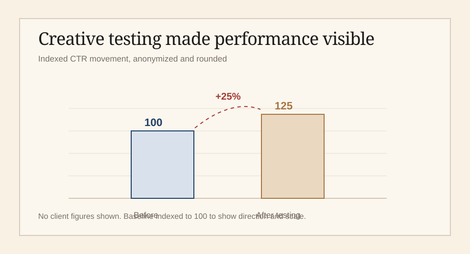

Un portfolio rapide à lire pour les recruteurs en France: qui je suis,
quand je suis disponible, ce que j'ai fait, comment je travaille, et les
dossiers à ouvrir ensuite.
A fast portfolio for French hiring teams: who I am, when I am available,
what I have done, how I work, and which dossiers to open next.
Stage dès mars 2027 / alternance dès septembre 2027Internships from March 2027 / apprenticeships from September 2027
Je relie ce que les gens font à ce que les équipes doivent décider.I connect what people do to what teams need to decide.
Je suis étudiant à ESCP Business School à Paris, avec une base en
ingénierie, une expérience en dashboards de performance, croissance
marketplace et coordination de projets, et un intérêt constant pour les
décisions produit qui partent du comportement réel des consommateurs.
I am a student at ESCP Business School in Paris, with an engineering
base, performance dashboard experience, marketplace growth work, project
coordination experience, and a consistent interest in product decisions
that begin with real consumer behavior.
Ingénieur de formation, passé par la croissance et le marketing de
performance, aujourd'hui en formation product management via ESCP et
un stage PM chez Danone.
An engineer by training who moved into growth and performance
marketing, now formalizing product management through ESCP and a
Danone PM internship.
Mon angle est simple: avant d'ajouter un projet, un outil, un dashboard
ou une fonctionnalité, il faut savoir ce que l'équipe doit décider et
ce que les données rendent visible.
My angle is simple: before adding a project, tool, dashboard or feature,
understand what the team needs to decide and what the data makes visible.
Format dossier: scanner, ouvrir la preuve utile, contacter.Dossier format: scan, open useful proof, contact.
PM
Transformer le besoin en priorité produit.Turn user need into product priority.
PMM
Transformer l'usage en message mémorisable.Turn usage into memorable positioning.
Innovation PMO
Rendre les jalons, risques et prochaines étapes lisibles.Make milestones, risks and next steps visible.
Recherche terrain & culturelleCultural & field research
Observer les usages, les contextes et les différences culturelles avant de formaliser une hypothèse.Observe usage, context and cultural differences before formalizing a hypothesis.
Au-delà des dossiersBeyond the dossiers
Voyagé dans plus de 100 villes en Inde, en observant les tissus,
les soies régionales, les cuisines et les fêtes locales, la même
curiosité que celle qui alimente les dossiers, appliquée en dehors
d'un brief.
Traveled to 100+ cities across India, reading the fabrics, regional
silks, cuisines and local festivities along the way, the same curiosity
that runs through the dossiers, applied outside a brief.
Athlète national de Mallakhamb pendant 12 ans, puis 5 ans en tant qu'entraîneur compétitif.National-level Mallakhamb athlete for 12 years, then 5 years as a competitive coach.
Aime les vieux livres, surtout ceux qui portent encore les notes et griffonnages de leur précédent lecteur.Enjoys old books, especially the ones that still carry a previous reader's notes and scribbles.
DisponibilitéAvailability
Stage dès mars 2027, alternance dès septembre 2027.Internships from March 2027, apprenticeships from September 2027.
Disponible à partir deAvailable from
Mars 2027Stages PM, PMM, innovation, consumer strategy ou PMO. Alternance dès septembre 2027.PM, PMM, innovation, consumer strategy or PMO internships. Apprenticeships from September 2027.
Danone, Innovation & Productivity PM Intern sur des projets Dairy.Danone, Innovation & Productivity PM Intern on Dairy projects.
Activement ouvert aux opportunités de mars 2027 pendant la fin de mon stage chez Danone, jusqu'à fin février 2027.Actively open to March 2027 opportunities while completing my current internship at Danone, through the end of February 2027.
Mars 2027
Recherche de stage en PM, PMM, innovation, project management ou consumer strategy.Internship search in PM, PMM, innovation, project management or consumer strategy.
Septembre 2027
Recherche d'alternance dans une équipe produit, innovation, performance ou PMO.Apprenticeship search in a product, innovation, performance or PMO team.
ExpérienceExperience
Une base innovation, data et exécution opérationnelle.An innovation, data and operating execution base.
Sep 2026 - Fév 2027
Danone, Innovation & Productivity PM Intern
Dairy innovation, coordination projet, gouvernance, outils, Power BI et amélioration continue.Dairy innovation, project coordination, governance, tools, Power BI and continuous improvement.
Coordination de projets innovation Dairy: nouveaux produits, recettes, formats et initiatives de productivité.Coordination of Dairy innovation projects: new products, recipes, formats and productivity initiatives.
Planning et suivi des jalons: validation concept, essais R&D, industrialisation et launch readiness.Planning and tracking milestones: concept validation, R&D trials, industrialization and launch readiness.
Data quality reviews, visibilité des risques et coordination R&D, Marketing, Supply, Quality et Regulatory.Data quality reviews, risk visibility and coordination across R&D, Marketing, Supply, Quality and Regulatory.
Support IPROview, Power BI, gouvernance innovation, KPIs et santé du portfolio.Support for IPROview, Power BI, innovation governance, KPIs and portfolio health.
10+ marques consumer, trois marchés, budget mensuel d'environ EUR 68K,
dashboards Excel et Power BI, +25% CTR, 1,000+ assets adaptés pour le Canada.
10+ consumer brands, three markets, around EUR 68K monthly budget,
Excel and Power BI dashboards, +25% CTR, 1,000+ adapted assets for Canada.

CTR indexé: +25% après tests créatifs structurés. Données client non exposées.Indexed CTR: +25% after structured creative testing. No client figures shown.
Conduite d'une équipe de 25 personnes en BAJA SAE India et travail de
produit sur un concept de mobilité électrique pliable.
Led a 25-person BAJA SAE India team and worked on a foldable electric
mobility product concept.
Master in Management, Grande Ecole, ESCP Paris, prévu avril 2027.
B.E. Mechanical Engineering, Savitribai Phule Pune University, top 1%.
Master in Management, Grande Ecole, ESCP Paris, expected April 2027.
B.E. Mechanical Engineering, Savitribai Phule Pune University, top 1%.
Paris / India
CompétencesSkills
Les outils et langages pratiques pour travailler vite avec une équipe.The tools and working languages to move quickly with a team.
Tools
Excel, Power BI, SQL
Dashboarding, KPI tracking, data visualization, reporting de performance et data quality reviews.Dashboarding, KPI tracking, data visualization, performance reporting and data quality reviews.
Marketplace
Amazon Seller Central / Ads
Suivi acquisition, conversion, advertising, inventory, contenu A+ et performance marketplace.Acquisition, conversion, advertising, inventory, A+ content and marketplace performance tracking.
Project & PMO
Milestones, governance, stakeholders
Coordination projet, suivi des risques, préparation de forums de décision et amélioration continue.Project coordination, risk tracking, decision forum preparation and continuous improvement.
Languages
English C1, French A2 improving
Langue de travail quotidienne: anglais. Français A2, en progression active via des cours réguliers. Marathi natif, hindi bilingue.Day-to-day working language: English. French at A2, actively improving through regular coursework. Marathi native, Hindi bilingual.
Certifications
Google, McKinsey, Inside LVMH
Google Digital Marketing & E-Commerce 2025, McKinsey Forward 2025, Inside LVMH 2024.Google Digital Marketing & E-Commerce 2025, McKinsey Forward 2025, Inside LVMH 2024.
Reference
Citation réelle à ajouterReal quote pending
En attendant une phrase approuvée, références disponibles sur demande.Until an approved quote is available, references are available on request.
MéthodeMethod
Un processus court pour transformer l'observation en décision.A short process for turning observation into decision.
ObserveSeparateNameTranslateMake it usable
01
ObserverObserve
Regarder les avis, routines, recherches, contraintes et moments de choix.Read reviews, routines, searches, constraints and moments of choice.
02
SéparerSeparate
Distinguer le signal utile du bruit, de la mode ou du claim répété.Separate useful signal from noise, trend and repeated claims.
03
NommerName
Trouver une phrase que l'équipe peut retenir, discuter et utiliser.Find a sentence the team can remember, debate and use.
04
TraduireTranslate
Transformer le signal en produit, positionnement, CRM ou contenu.Turn the signal into product, positioning, CRM or content logic.
05
Rendre utilisableMake it usable
Créer un dossier, une règle ou un framework qui aide la décision suivante.Create a dossier, rule or framework that helps the next decision.
DossiersDossiers
Des preuves à ouvrir quand un cas vous intéresse.Proof to open when a case looks relevant.
Comment lire les dossiersHow to read the dossiers
Les projets réels montrent le travail contribué, les contraintes, les artefacts et les décisions. Les exercices de réflexion montrent comment je structure des catégories que je n'ai pas travaillées directement.Real projects show contributed work, constraints, artifacts and decisions. Thinking exercises show how I structure categories I have not worked on directly.
Analyses indépendantes menées pour tester la méthode sur des catégories que je n'ai pas eu la chance de travailler directement, pas des missions réelles.Independent analyses used to test the method against categories I have not worked on directly, not real engagements.
Pour discuter d'un rôle, d'un stage ou d'un sujet à structurer, écrivez-moi simplement.To discuss a role, internship or problem to structure, just send a note.
Envoyez quelques lignes sur le rôle, l'équipe ou le sujet. Je vous
répondrai avec ce qui aide le plus: CV, dossier, note courte ou échange.
Send a few lines about the role, team or question. I will reply with
whatever is most useful: CV, dossier, short note or conversation.
Je réponds généralement sous 24-48 heures.I usually reply within 24-48 hours.